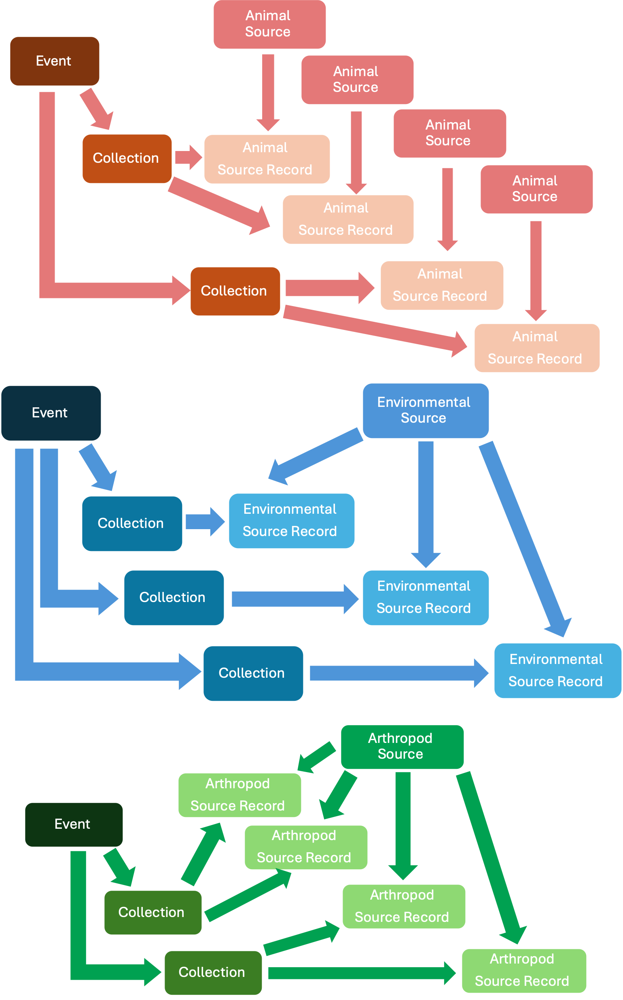

General Overview
In the data model, a Source is a unit that can be observed and provide Specimens for analysis or whose observation at time t is used in a diagnostic test (e.g., full Animal for an MRI). Sources can provide between zero up (e.g., observation only) to indefinite number of Specimens to conduct Diagnostic tests. The data model manages four types of Sources: i) a co-specific group of animals (Group), ii) individual animals (Animal), iii) sites that can provide abiotic tissue of interest or biotic material of animal origin whose individual or group animal of origin is unknown (Environmental), and iv) sites where arthropods are obtained from (Arthropod). A Group Source could correspond to a specific bat roost of species X sourcing guano, an Animal Source could be a collared animal, an Environmental Source could be a pond where water is collected from or feces found in the field whose animal of origin is unknown, and an Arthropod Source could be a site where mosquito larvae are collected from. Sources contain time-independent data only, such as the species of an animal in the case of a Group or Animal Sources (more below).
All Sources can potentially be identified and tracked over time if needed. However, there are limitations, Environmental and Arthropod Sources are site-specific, making them easier to track across different time points. Animal and Group Sources may not always be individually identifiable, which can prevent tracking them over time.
**A Source collected, or captured at time t can be linked to Events through a Collection (see previous section) via a Source Record (the Source at time t), which represents the Source at a specific time t. Source Records contain only time-dependent data, such as health status at time t for Group and *Animal Sources**.
Individually identified Sources can tracked across multiple Events, even across different Surveillance Activities. For example, a bat (Source) captured in a mist net (Collection) deployed at a roost at time t (Event), individually identified, and later recaptured in another Event t′. This bat is linked to both the original capture Event and the recapture Event, with a unique Source Record for each occurrence.
Sources that are not identified will be linked as a Source Record to the Event where they were observed or captured only. For example, a bat (Source) that is captured (Collection) and sampled during an Event but not marked or a dead animal not identified found by a ranger during a patrol. The bat and the animal found are linked only to the Event they were capture and observed, respectively.
Sources found opportunistically are still linked to an Event, even if no formal Collection occurred. For example, a member of the public reports a dead animal (Source Record) found on a beach at time t (Event).
Group Source
A Group Source is a unit of co-specific individuals (animals of the same species) associated to a herd, an area, a site, a farm, a cage, a stall, an enclosure, or other that makes the individuals part a single epidemiological unit. Group Sources can be observed, captured, and provide Specimens at time t as a collective. Data of a Group Source include the Species, the Group Source ID, the Group Source Cross Reference ID, among others (see Data Dictionary).
The purpose of Group Source is to record individuals at the species level instead of individual by individual. This can occur when herds are the unit of interest, when protected area rangers find animals of the same species in a health event, or to document animals in a unit such as a cage, stall, or vendor of a market. For example, animals of two species in a single cage, not tracked individually, represent two Group Sources (one Group Source by species).
Group Source Record
A Group Source Record consists of a count of the animals in the Group Source at time t, stratified by sex, age, and health status (e.g., healthy, injured, sick, or dead). Other properties of the Group Source Record are Observed Anomalies, Potential Causes of Disease or Death if they apply at time t, among others (see Data Dictionary). Properties of a Group Source Record are documented at the group level, therefore, multiple options can be reported. For example, a Group Source with three dead animals can receive several potential causes of death. It is not possible to know the distribution of the potential causes of death and other properties across individuals of a Group Source Record, but only that they were present in at least one individual.
Group Source Records can include a mix of dead, diseased, poisoned, infected, injured, and healthy individuals of the same species or just one of them if all the animals of the species are dead. A Group Source Record of only healthy animals can also be part of a Health Event depending on the definition of Event.
Group Source Records can have a single individual. For example, rangers patrolling a protected area might find a dead animal of species X and two dead animals of species Y at the same site (Event) and rangers record their animal data as Group Sources. If this is the case, the single animal of species X belong to a Group Source Record and the two animals of species Y correspond to another Source Group Record. Moreover, if only a single animal of a known herd is observed at time t, then that individual is the representation of the herd for the Source Group Record.
An Event can have more than one Group Source Record of the same species. For example, animals of the same species in two cages hold by a vendor in market where the vendor is considered an Event. Then the animals per cage could be a unit, and therefore, two Group Source Records of the same species under the same vendor (same Event).
An Group Source can be used directly for a Diagnostic (e.g., assessment of the body condition of a specific herd). The data model can accommodate Diagnostics applied to a group itself rather than a Specimen taken from that Group Source. Specimens (see below) from Group Sources can be stored, exported, and they can be used for Diagnostics (see below). However, **the data model does not accept Group Sources Carcasses to be exported or stored as a set of Carcasses because their collection and manipulation implies an opportunity to collect data at the individual level (Animal Source). Similar criteria applies with Necropsies and the Specimens collected from these Carcasses. In this case, the animals of the Group Source whose Carcasses are taken or used for field Necropsy can and MUST be converted to Animals Sources. These Animal Sources are identified as ex-members of a Group Source and their Carcasses, Necropsies, and Specimens are tight to the individual animal (more details in the Complexities section below).
Group Sources cannot be taken from the field. If dead animals from a Group Source are taken from the field, each one of them must be documented as an Animal Source coming from the corresponding Group Source whose Carcass is collected (See ‘Animal Source’ and ‘Carcass’ below). Live animals of Group Sources cannot be taken ex-situ.
An animal of species X documented as part of a Group Source Record must not be included as an Animal Source Record and vice-versa. If an Event contains a Group Source Record of species X and an Animal Source Record of species X, then the total number of animals of species X at the Event is the sum of the number of animals of species X in the Group Source Record and the single individual of species X recorded as an Animal Source Record. An example is a herd of cows illegally raised in a protected area whose health is assessed at time t. The herd of this example contains 20 cows. Two of them are sampled and the rest are part of a single unit. In this case, the sampled cows can be added as two Animal Source Records (one per sampled cow) and the remaining 18 animals can be added as a single Group Source Record that distributes the animals per sex, age, and health status. The total number of cows are the individuals in the Group Source Record (18) and the two cows recorded as Animal Records. The “herd” identity of the 20 cows can be kept using a cluster (see “Complexities”). If the Group Source Record contains the original 20 cows and also two Animal Source Records, then the total number of cows will be 22.
Animal Source
An Animal Source represents an individual animal whose specific individual-level data is of interest. Animal Sources can be observed, captured, tested, and provide Specimens at time t, including the full carcass to have a Necropsy completed. Animal Source data includes the Species, the Animal Source ID, the Cross Reference ID, the Sex, among others (see Data Dictionary). Past marking codes (if any have been used) are considered immutable and entered as data of the Animal Source.
An example of Animal Sources are animals of the same or different species caged in a live market. If the data of the animals is to be collected at the individual-level, then each individual in the cage represents an Animal Group Source.
Animal Source Record
An Animal Source Record consists of an Animal Source at time t . Properties of an Animal Source Record are its Age, Health Status, Observed Anomalies, and Potential Cause of Disease or Death if they apply at time t, among others (see Data Dictionary). The current marking code of an individual animal at time t is considered mutable and a property of the corresponding Animal Source Record. Properties of an Animal Source Record can receive single or multiple choices. For example, the observed health status is only one (live healthy, live sick) but an Animal Source Record can receive several observed anomalies if they observed in the same individual at time t (wounded, hair loss, diarrhea, etc. See Data Dictionary).
An Animal Source can be either dead, diseased, poisoned, infected, injured, or healthy at time t. An Animal Source Record with an observed health status “live healthy” can be part of an Event depending on the Event definition (e.g., a healthy animal of species X next to dead animals of species X, Y, and Z; or healthy animals captured for Specimen collection).
An Animal Source Record can be used directly for a Diagnostic (e.g., X-rays in a live animal at time t). The data model can accommodate Diagnostics applied to the individual itself rather than a Specimen taken from that Animal Source.
Live Animal Source cannot be taken ex-situ. Only Carcasses of Animal Source can be taken out of the field and stored in a facility.
An animal of species X documented as part of a Group Source Record cannot be included as an Animal Source Record and vice versa. If an Event contains a Group Source Record of species X and an Animal Source Record of species X, then the total number of animals of species X at the Event is the sum of the number of animals of species X in the Group Source Record and the single individual of species X recorded as an Animal Source Record. An example is a herd of cows illegally raised in a protected area whose health is assessed at time t. The herd of this example contains 20 cows. Two of them are sampled and the rest are part of a single unit. In this case, the sampled cows can be added as two Animal Source Records (one per sampled cow) and the remaining 18 animals can be added as a single Group Source Record that distributes the animals per sex, age, and health status. The total number of cows are the individuals in the Group Source Record (18) and the two cows recorded as Animal Records. The “herd” identity of the 20 cows can be kept using a cluster (see “Complexities”). If the Group Source Record contains the original 20 cows and also two Animal Source Records, then the total number of cows will be 22.
Vaccination
The data model allows the inclusion of vaccinations completed in an Animal Source by the time it was captured or immobilized at time t. It is possible to include as many vaccination records as needed to an Animal Source Record. Thus, the vaccination data accumulates for the corresponding Animal Source.
Carcass
The carcass of a dead Animal Source can provide Specimens. A Carcass entered to the database comes from a specific Animal Source and they are collected at a single specific time t. Therefore, each Carcass is associated with one and only one Animal Source Record (when the Carcass was collected). Properties of a Carcass include its Decomposition Condition, Storage During Transport, Owner, Availability, among others. Moreover, Carcasses are stored and changes in the storage or movement of the Carcass from one storage facility to another can be multiple over time. Similarly, Carcasses can be exported multiple times. Changes in storage associated with an exportation must occur after the exportation is completed and the Carcass can be stored in the destination facility.
A Carcass does not provide Specimens directly but through the dead Animal Source Record. The Specimens can be identified as Carcass sourced.
A Carcass is not used directly for a Diagnostic but through the dead Animal Source Record (e.g., X-rays in a dead animal). The diagnostic information is part of the set of Diagnostics conducted in the corresponding Animal Source.
Necropsy
A Necropsy is associated with a specific Animal Source Carcass. The earliest date a Necropsy can occur is when the dead animal was found and a Field Necropsy was conducted (no Carcass collection) or after the Carcass was collected.
Necropsy data includes the a Necropsy Identifier, the Necropy Cross Reference Identifier, the Date of the Necropsy, findings per system, among others (see Data Dictionary).
Necropsies can be primary or secondary. A primary necropsy usually starts with an intact carcass (not previously used in a necropsy). A secondary necropsy is usually conducted by a veterinarian pathologist using pictures of the primary necropsy or using a carcass already necropsied.
A Necropsy does not provide Specimens directly but through the Animal Source Record.
Environmental Source
An Environmental Source is a unit in space where Specimens that cannot be associated with a Group Source, an Animal Source, or Arthropod Source can be collected from (e.g., the site where feces of unknown source are found). Properties of an Environmental Source include the Environmental Source ID, the Cross Reference ID, among others (see Data Dictionary).
Environmental Source Record
An Environmental Source Record is the biotic or abiotic tissue from the Environmental Source at time t recovered using a common Collection. For example, the water collected from a pond (Event) at site X (Environmental Source) using a device (Collection) to obtain water at time t (Environmental Source Record). Properties of an Environmental Source Record include Record Number, Type of Tissue, the Quantity, and the Quantity Unit (see Data Dictionary).
A key difference between the Environmental Source and the Group and Animal Sources is that an Event can contain multiple Records of a single Environmental Source (many Collections from the same Environmental Source at time t). Instead, an Event can contain a single Record of many Group and Animal Sources (in one or many Collections). An Event can only contain a single Environmental Source, but many Records can be retrieved (one per collection). On the opposite, many bats can be captured in a mist net (many Sources), but they can only provide one Record per Event (see figure at the end of this section).
Another key difference is that “species” for Group and Animal Sources is a property of the Source, whilst for Environmental Sources is a property of the Record. For example, it could be possible to identify the species that dropped feces found in the field as “mammal”. If this is the case, then the Species property can be completed with this level of taxonomy.
If there is a failed Collection of tissue at time t from the Environmental Source) then it is the Collection that exists without the Environmental Source Record. But an Environmental Source Record cannot be empty.
Arthropod Source
An Arthropod Source is a unit in space where arthropods can be taken from (e.g., a household in the forest where traps can be set). Properties of an Arthropod Source include the Source ID, the Cross Reference ID, the Cross Reference ID Origin, among others (see Data Dictionary).
If the interest of the Surveillance Activity is at the arthropod individual level (e.g., butterflies with problems in their wings or with parasites), then the user should consider these arthropods as Animal Sources. Arthropods from Animals Sources (attached ticks, lice, fleas, mites) are Specimens (see next section) from an Animal Source and not Arthropod Sources.
Arthropod Source Record
An Arthropod Source Record is the arthropods of the same species collected at the Arthropod Source at time t using a common Collection. For example, the mosquitoes of species X collected (Event) at the household in the forest (Arthropod Source) at time t (Arthropod Source Record) using a specific type of trap (Collection). This means that mosquitoes of a specific species collected by CO2 traps deployed at the Arthropod Source at time t is an Arthropod Source Record and that mosquitoes of a specific species collected by any number of BG traps deployed at the Arthropod Source at time t is another Arthropod Source Record. The properties of an Arthropod Source Record include Record Number, Species, and the mosquitoes distributed by age, sex, and condition (females only), among others (see Data Dictionary).
Similar to Environmental Sources, a key difference between the Arthropod Source and the Group and Animal Sources is that an Event can contain multiple Records of a single Arthropod Source (many Collections and many species at the same Arthropod Source at time t). Instead, an Event can contain a single Record of many Group and Animal Sources. An Event can only contain a single Arthropod Source, but many Records can be retrieved (one per Collection per species). On the opposite, many bats can be captured in a mist net (many Sources), but they can only provide one Record per Event (see Figure at the end of the section).
Similarly, another key difference is that “species” for Group and Animal Sources is a property of the Source, whilst for Arthropod Sources is a property of the Record. For example, mosquitoes obtained through CO2 traps (Collection) deployed at a specific site (Source) will be identified and counted by species after the Collection and they will constitute an Arthropod Source Record.
If there is a failed Collection of arthropods at time t from the Arthropod Source) then it is the Collection that exists without Arthropod Source Records. But an Arthropod Source Record cannot be empty.
